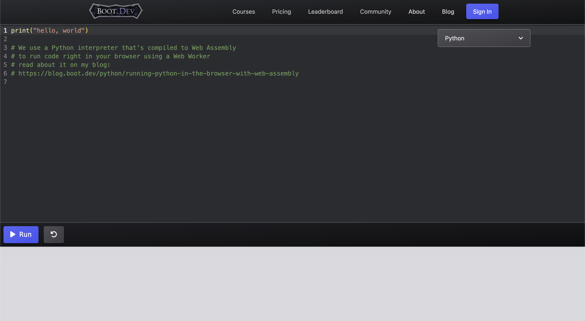
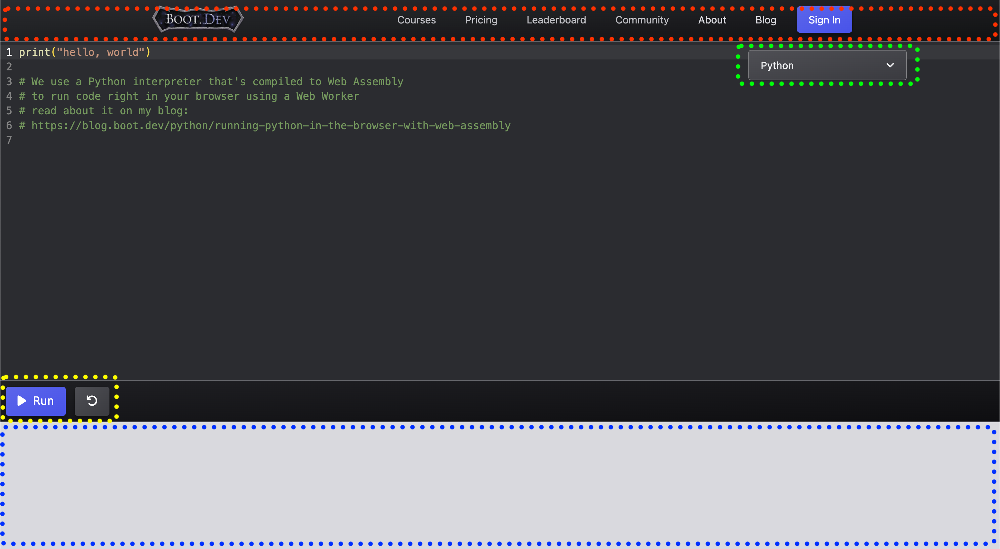
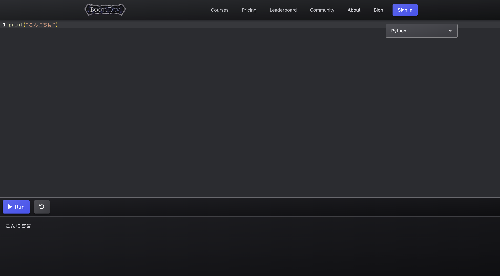

Chapter2 : Pythonを始めよう
1. "プログラミング"を知ろう
プログラミングとは
書いたプログラムは、色々な呼び方がありますが、「Script」と呼ぶことがあります。
Scriptは、日本語で「台本」という意味がありますね。
まさにその通りで、コンピュータにあらかじめ、「こう動いてね」という台本を与え、
実際に使用される時、コンピュータが台本通りに動きます。
この、"台本を与える行為"こそが、プログラミングというわけです。
しかし、その台本を書くときは、普段私たちが使っている、
「日本語」や「英語」などをそのまま書いても動いてくれません。
コンピュータは、0と1のみの数字からなる「機械語」を理解できます。
ですが、すべて機械語で台本を書くのは不可能に近いです。
そこで、プログラミング言語が生まれました。
プログラミング言語は、英語と数字、記号などからなる言語です。
もちろん、コンピュータは、基本的に、直接プログラミング言語を読むことができません。
しかし、それを"コンパイル"と呼ばれる、プログラミング言語で
書かれた台本をすべて機械語に直す機能を搭載することで、
間接的にコンピュータに機械語の台本を書く、という手法や、
"インタプリタ"と呼ばれる、プログラミング言語で書かれた台本を保存しておき、
実行するとき、一行ずつ機械語として解釈して処理する手法ができました。
Pythonは、インタプリタの手法を採用しています。
プログラム(台本)は、色々な呼ばれ方をするので、よく使われる呼び名を書いておきます。
・プログラム(Program)
・ソース(Source)
・コード(Code)
・ソースコード(SourceCode)
・スクリプト(Script)
プログラミングの注意点
まず、半角と全角は、全く違う文字として扱われます。
例えば、以下の二つのコードの違いはわかりますか？
print("Hello")
ｐｒｉｎｔ（”ｈｅｌｌｏ”）
一目瞭然ですね。上のコードはすべて半角、下のコードはすべて全角で書いています。
しかし、人間が見ると、何を書いているのかは理解できますよね。
しかし、Pythonとして実行すると、上の方は正常に動作しますが、
下の方はエラーが出てしまいます。
人間が理解できても、コンピュータが理解できなくては意味がないのです。
では、以下のようなコードはどうでしょうか。
print("Thank you!")
print["Thank you!"]
print{"Thank you!"}
この3つは、カッコの種類がそれぞれ違います。
こちらも、人間はすべて同じように理解できますが、
コンピュータは、一番上のコードしか理解できません。
このように、細かな違いでもエラーを引き起こしてしまいます。
特に気づきにくいと言われているものが、以下のようなコードです。
print(1 + 2)
print(1 + 2)
どこが違うかわかるでしょうか。片方は動作しますが、もう片方は動作しません。
この2つのコード、カーソルで選択できるようにしてあるので、
ゆっくり、左端のpの文字から右に向かって選択してみてください。
1+2の数字と+の記号の間のスペースが、上は半角スペース3つ、
下は全角スペース1つになっているのです。
これだと、上のコードしか動作しません。
でも、見た目では、違いはほとんどないと思います。
スペースの違いも、落とし穴になりうるようです。
(幸いなことに私は一度も落ちませんでしたが。)
もう一つ、スペースに関連することなのですが、Pythonでは、
インデント(プログラムの左のスペース)によるグルーピングをしています。
これは、少しわかりにくいと思いますので、後ほど説明します。
2. 動かす準備をしよう
ここまで、ずっと文章を読んできて、そろそろ実際に
動かしてみたくなった頃ではないでしょうか。
まずは、準備をしていきましょう！
前回お話しした、VSCode、Boot.devは、それぞれ特徴がありますので、このサイトでは
Boot.dev : コードの練習など(基本編)
VSCode : 一つの作品をしっかり作る(実践編)
というように使い分けていきます。
ということで、まずはBoot.devにアクセスしてください。

とりあえず基本編では、Boot.devを使用していきますので、操作を説明しておきます。

赤い点線で囲ったところは一切触らなくて大丈夫です。
緑の点線で囲ったところで、プログラミング言語の変更ができますが、Pythonなのでこのままです。
点線で囲んでいない、真ん中のエリアでプログラムを書きます。
黄色の点線で囲ったところで、プログラムの実行、再実行ができます。
青い点線で囲ったところがコンソール(エラーや実行結果などが表示されるところ)です。
物は試しということで、
真ん中のエリアのコードを全て削除し、1行目に、
print("こんにちは")
と書いてみてください。
そして、そのまま「Run」ボタンを押します。

この画像のように、 こんにちは と表示されなければ、
コードが間違っているか、何か不具合がある可能性があります。
うまくいったら、これで準備は完了ですね。
print(ここに表示したいもの)
という形は、後から詳しく説明しますが、とりあえず覚えておいてください。
次のページから、早速Pythonでプログラミングをしていきますよ！
 1
2
3
4
5
6
1
1
2
3
4
5
6
1